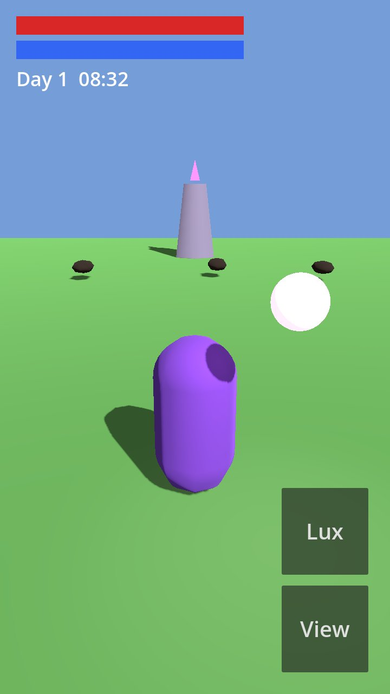
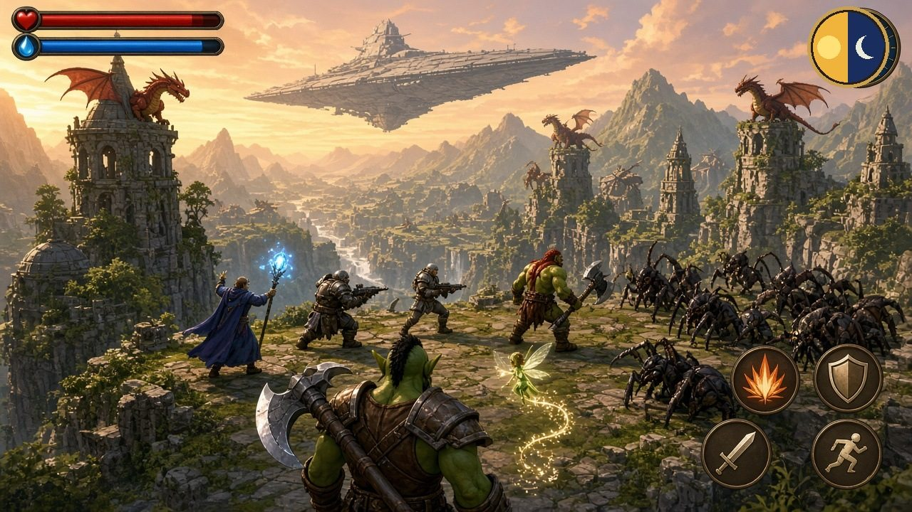
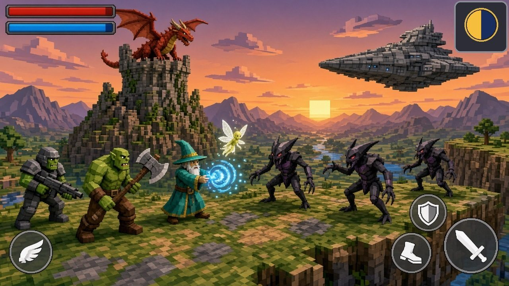
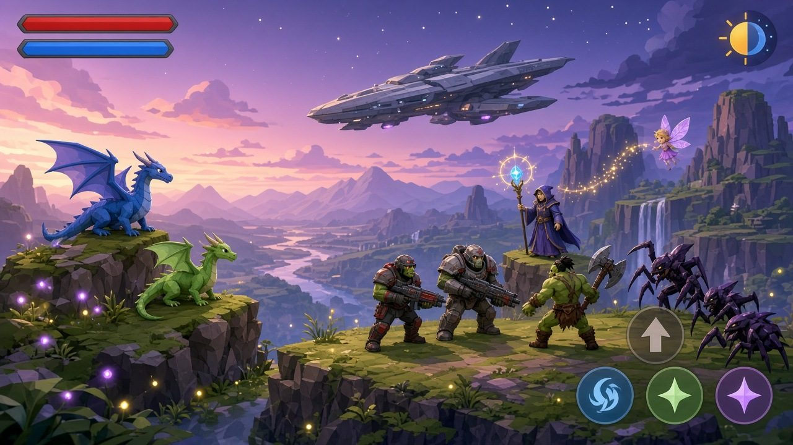
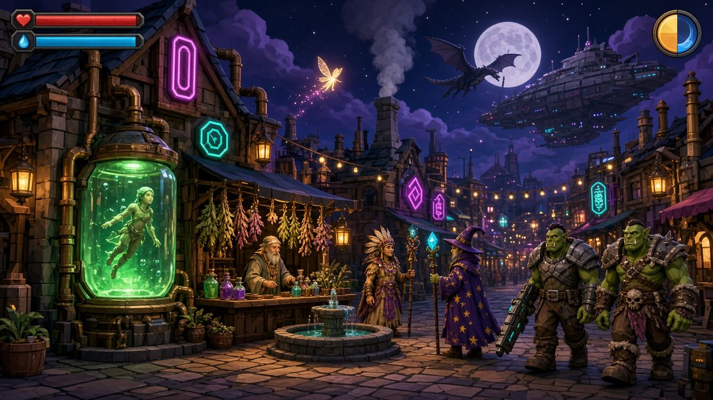
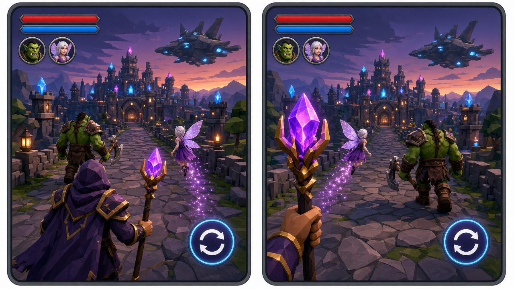
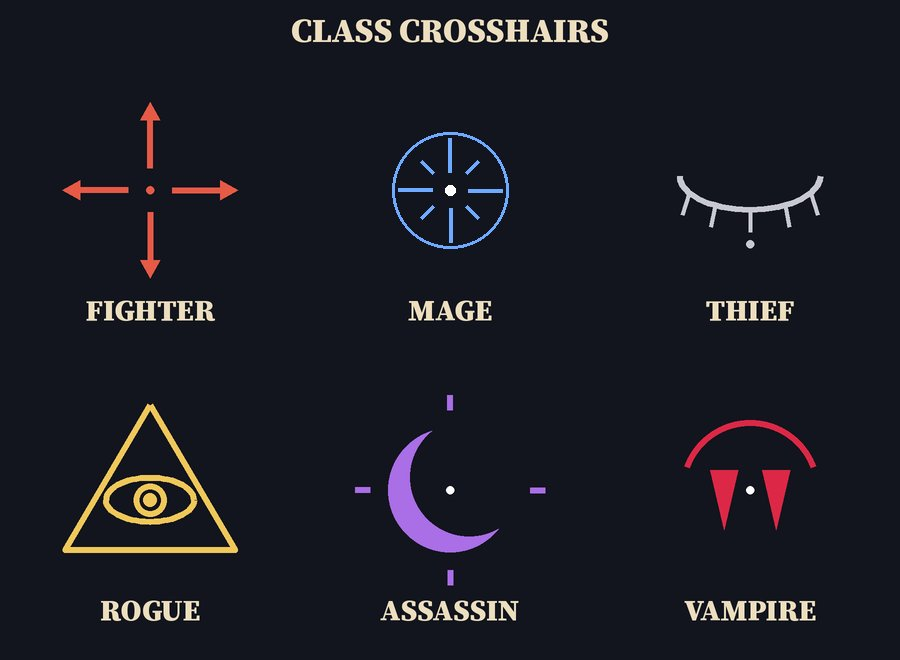
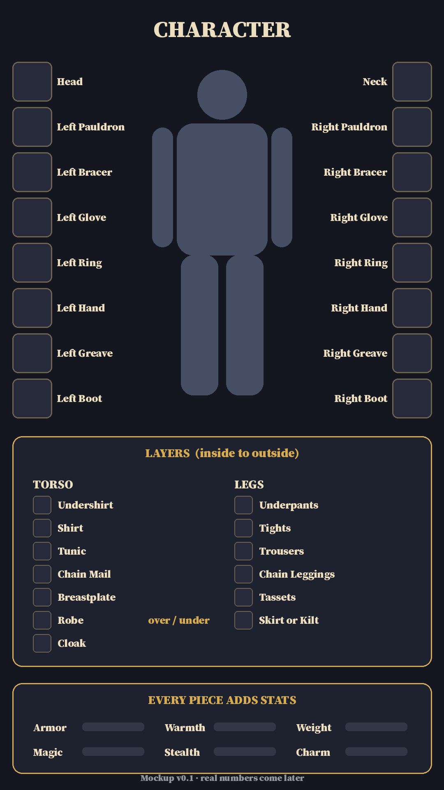

This is a role-playing game for phones, made in the free Godot engine. It is set on Earth, far in the future, where magic, science, and neon cities share one sky. The test uses plain shapes today. The pictures below show where the art is heading.

Play the GameThis is an early test, not the finished game.
How to play
- On a phone, drag the left side of the screen to move. The word Move marks that side.
- Tap View to switch between first person and third person.
- Tap Lux (Latin for light) to turn nearby bugs into light. This uses mana.
- On a computer, use the arrow keys or WASD, and click the buttons.
- A glowing fairy flies around you and slowly refills your health and mana.
- If your health runs out, you start again in the middle of the field. There is no gore. Bugs pop into light.
Pictures
Fact means a real screenshot from the game running now. Concept art means a picture of how the game might look later, not a screenshot.







The world
The game is set on Earth, far in the future. Old relics still remain.
- Imperial villages and cottages, giant mushrooms, and volcanoes that erupt.
- Beautiful seas with huge imperial harbors and ships being built.
- Many peoples live side by side: Nordics, gray aliens, dragons, people who look like Krishna or Ganesh, and also demons, aliens, entities, souls, spirits, liches, vampires, and werewolves.
- Werewolves live out in the wilderness.
- Vampires and humans both want to be in charge, and now they know about each other.
- Long ago, kingdoms built a great wall to keep the vampires out. The vampires stopped at the mountains, because they do not like mountains.
- Today, power works like big companies, the heirs of those old kingdoms.
- Dragons and fairies help the people and the monks.
- Magic and science both work. Starships, cloning labs, and neon cities stand next to old villages.
The hero and companions
- You play one hero, and friends join you along the way. Each friend has a story and a loyalty quest.
- Your first companion is an ork trooper who joins after the bug fight.
- Classes include Pilgrim and Merchant. Anyone can rise all the way to King or Queen.
- You can pick your start (a town, a family, a job) or roll a random start.
- You can always see your hero, dressed from head to toe.
Three healing paths
Healing has three equal paths, so every player can find a style:
- Magic. Spells that use mana.
- Science. Healing tanks in med bays and on starships.
- Herbs. Plants you grow and brew on your farm.
The camera
- One tap on View switches between first person and third person, any time.
- Auto Camera (the default) picks the best view for what you are using: first person for bows, guns, and aimed spells; third person for shields, healing, and invisibility. Swords work in either view.
- You can turn Auto Camera off in settings.
Guilds and languages
- There are four guilds: Mages, Fighters, Thieves, and Assassins.
- Each new world rolls new guild names, always with a clear label, like “The Blood Cloak (Assassins Guild).”
- In kid mode, the Assassins Guild is sneak and tag, with no killing.
- You learn real words as you play, from Latin, Greek, Aramaic, Sanskrit, and Arabic. The first spell is Lux, Latin for light.
- Stories come from the hero’s journey and from old public-domain tales, so the game can make new adventures without end.
What is built
- A working test in Godot you can play above: day and night, health and mana, a fairy who refills you, bugs that crawl in, the Lux spell, the View button, and colony towers.
- Concept art for three art looks plus a mix, the camera switch, class crosshairs, and the equipment screen.
What is next
- Blake will choose the art look and the world’s name.
- Next in the game: an ork companion, more of the colony, and a build for phones.
- Still to decide: the main peoples, where magic comes from, and whether Odin and Fae get characters or places of their own.
Brick by brick.